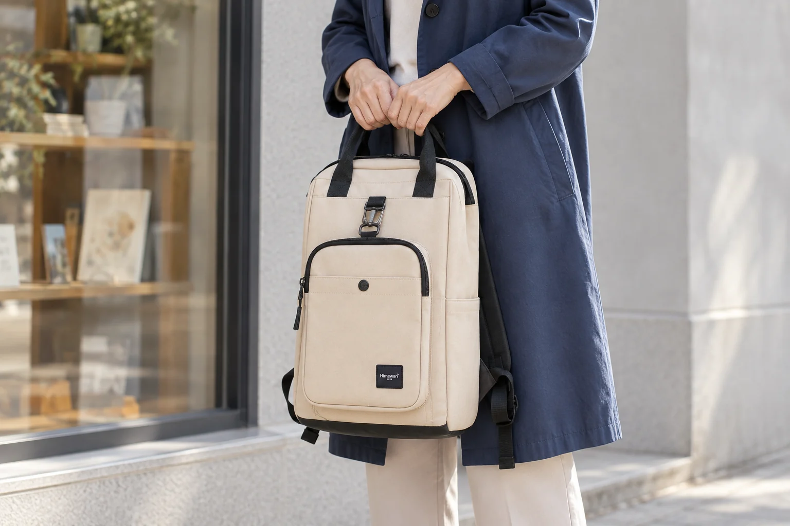
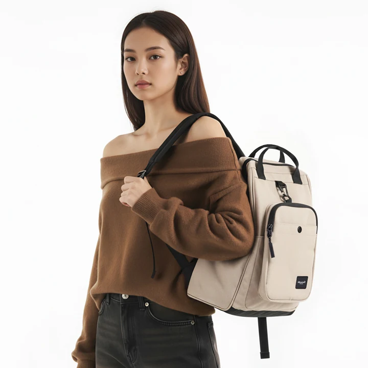
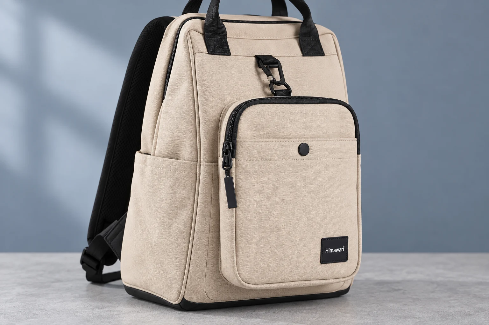

베이지 백팩이 사진마다 다르게 보일 때, 실물 색은 어떻게 확인할까

베이지 백팩을 주문하려고 사진 두 장을 번갈아 보는 상황을 생각해봅니다. 한 장에서는 밝은 크림색에 가깝고 다른 장에서는 회색이나 노란 기운이 더 느껴집니다. 밝은 쪽이 마음에 들지만 그 사진만 믿고 고르기는 망설여집니다. 이때 사진을 더 많이 모으기 전에 두 장이 같은 옵션을 보여주는지부터 확인하면 질문의 범위가 좁아집니다.
여기서는 Himawari No.0403 베이지를 후보로 놓고 비교를 이어가겠습니다. 상품명에는 베이지가 들어갑니다. 그래도 사진마다 어느 색상을 찍었는지 이름만으로 모두 연결할 수는 없습니다. 다른 색처럼 느껴졌다는 관찰과 다른 색상 옵션이라는 사실을 나누어 두고 출발합니다.
사진의 이름부터 같은 가방에 연결하기
마음에 든 밝은 사진을 A, 조금 어둡게 느껴진 사진을 B라고 메모합니다. A와 B는 이 사례를 설명하기 위한 구분입니다. 실제 문의에서는 화면에 보이는 사진 순서나 해당 이미지의 위치를 적습니다. 캡처 한 장만 보내면 판매자가 어느 상품의 어느 사진인지 다시 찾아야 할 수 있습니다.
두 사진 옆에 같은 모델 번호가 있는지 읽고 각 사진에 붙은 색상 표기도 확인합니다. 상품 제목이 같아도 여러 색의 사진을 한 페이지에 모아 놓았을 수 있습니다. 반대로 사진 색이 달라도 같은 베이지를 찍은 자료일 수 있습니다. 표시가 없으면 동일 옵션인지 확인 전이라고 남깁니다. 사진의 밝기 차이로 이 빈칸을 채우지 않습니다.
후기 사진을 B로 골랐다면 구매 당시 옵션을 확인할 자료도 필요합니다. 후기 목록이 현재 상품 페이지 아래에 있다는 사실만으로 같은 베이지라고 연결하기는 어렵습니다. 옵션명이 적혀 있지 않은 사진은 색 차이가 궁금해진 계기로 남겨두고 현재 판매 중인 제품과 같은 색인지 판매자에게 묻습니다.
몸판과 검은 끈을 따로 바라보기
확인한 No.0403 원본 사진에서는 밝은 몸판과 검은 손잡이, 길게 이어지는 검은 끈이 구분됩니다. 앞쪽의 작은 가방 형태 부분에도 어두운 테두리가 보입니다. 전체를 한 덩어리로 보면 검은 부분의 면적 때문에 가방이 더 어둡게 느껴질 수 있으니, 궁금한 색을 넓은 몸판으로 한정해봅니다.

사진을 확대했을 때는 몸판 가운데와 접힌 가장자리를 구별합니다. 가장자리의 그늘까지 같은 밝기로 보일 것이라 기대하면 어느 사진도 맞지 않는 것처럼 느껴집니다. A의 빛을 받은 면과 B의 그늘진 면을 맞대고 있지는 않은지 확인합니다. 보는 부위를 맞추는 일과 실물 색을 알아내는 일은 다릅니다.
검은 끈이 두 사진에서 비슷하게 보인다고 몸판 색까지 정확히 재현됐다는 뜻은 아닙니다. 끈을 기준으로 화면의 색을 임의로 고치거나, 밝은 배경을 순백색이라고 가정해 몸판 색을 역산하지 않습니다. 원본 사진에서는 배색의 위치를 구분할 수 있습니다. 실물의 정확한 색조는 그 사진만으로 확인되지 않습니다.
조명과 화면 사이에서 남길 빈칸
같은 제품을 찍어도 조명과 촬영 후 보정이 다르면 사진의 색이 달라 보일 수 있습니다. 주변 배경도 색의 인상에 영향을 줍니다. A의 몸판이 밝아 보인다는 이유만으로 조명이 강했다고 단정할 수는 없습니다. 촬영 조건을 모르는 상태에서는 차이의 원인을 하나로 정하지 않고 어느 면에서 어떤 차이가 느껴졌는지만 적습니다.
휴대전화에서 두 장을 비교하다가 노트북으로 한 장만 열었다면 화면 조건까지 바뀝니다. 우선 같은 화면에서 두 사진을 나란히 보고 화면을 따뜻하게 표시하는 설정이나 자동 밝기 상태가 달라졌는지 확인합니다. 이 과정은 비교 도중 조건이 바뀌었는지 살피는 용도입니다. 설정을 끈 화면을 실물 색의 정답으로 삼을 수는 없습니다.
어느 설정에서 A가 더 예쁘게 보이는지 찾기 시작하면 처음의 질문이 흐려집니다. 주문할 베이지가 어느 쪽의 인상에 가까운지 알고 싶습니다. 화면 밝기를 올려 마음에 든 색으로 만든 캡처보다, 손대지 않은 두 사진과 차이가 느껴지는 부위를 남겨두는 편이 문의에 알맞습니다.
이 글의 AI 연출 사진은 이런 비교 상황을 설명하기 위한 장면입니다. 실제 No.0403을 정해진 조명 아래 촬영한 비교 자료가 아니므로 연출 사진의 몸판 색을 제품 원본과 맞추거나 실물 색을 판정하는 기준으로 쓰지 않습니다. 상품을 확인할 때는 판매처가 해당 옵션의 사진으로 안내한 자료로 돌아갑니다.

판매자가 답할 수 있는 문장으로 바꾸기
이제 처음의 망설임을 문의 문장으로 옮깁니다. 밝은 베이지인가요라고만 물으면 밝다는 말의 기준이 서로 다를 수 있습니다. 사진 위치와 궁금한 부위를 붙이고 같은 옵션인지부터 확인해달라고 요청합니다. 이미 확인했다고 생각하는 내용과 아직 모르는 내용을 문장 안에서도 구분합니다.
문의 예시는 다음과 같습니다. No.0403 베이지를 보고 있습니다. 상품 페이지 첫 착용 사진 A와 상세 영역의 사진 B에서 몸판 색이 다르게 느껴집니다. A는 밝은 크림색에 가깝고 B는 회색 기운이 더 있어 보입니다. 두 사진 모두 현재 판매하는 베이지 옵션인가요? 검은 끈과 테두리를 제외한 몸판을 기준으로 문의드립니다.
여기에 필요한 자료를 한 문장 더 요청합니다. 두 장이 같은 옵션이라면 현재 판매 제품의 몸판 색은 어느 사진을 참고하는 편이 나을까요? 가능하면 같은 베이지의 몸판이 넓게 보이는 추가 사진과 촬영 환경을 간단히 알려주세요. 실제 문의에서는 A와 B 대신 해당 사진의 위치를 적고 두 이미지를 함께 첨부합니다.
추가 사진에 흰 종이를 곁들여 달라고 하더라도 그 종이가 색을 보증하는 기준은 되지 않습니다. 판매자에게 특정 색으로 보이게 찍어달라고 요구하는 대신 원래 사진과 촬영 환경을 요청합니다. 노란 기운이 거의 없는 색만 원한다면 그 선호도 따로 적습니다. 선호를 전달하는 것과 제품이 그 조건을 충족한다고 확인받는 것은 구별합니다.
답변 뒤에도 같은 옵션과 같은 색조를 구별하기
두 장 모두 베이지라는 답을 받으면 옵션의 동일성은 확인한 셈입니다. 다만 그 답만으로 A처럼 밝게 보일지까지 해결되지는 않습니다. 판매자가 어느 사진을 참고하라고 했는지, 추가 사진은 같은 판매 옵션인지 다시 읽습니다. 자연광 촬영이라는 설명이 붙어도 빛과 화면의 조건이 완전히 같아지는 것은 아닙니다.
색 차이가 선택을 바꿀 정도인데도 자료가 충분하지 않다면 구매를 서두르지 않을 수 있습니다. 실물을 볼 수 있는 경로가 있는지, 수령 후 확인과 관련해 어떤 안내가 있는지 현재 판매처에서 알아봅니다. 확인되지 않은 색을 원하는 쪽으로 예상한 뒤 그 예상을 제품 설명처럼 남기지 않습니다.
처음의 A와 B 메모에는 같은 베이지인지 확인한 답과 몸판 색에 관해 남은 질문을 따로 적습니다. 제품을 받았을 때도 주문한 모델과 색상 표기를 먼저 대조한 뒤 실제 몸판을 살펴봅니다. 차이가 느껴지면 어느 사진의 어느 부분과 달랐는지 설명할 자료가 남습니다. 베이지라는 이름은 주문 대상을 찾는 출발점이고, 사진 두 장에서 생긴 의문은 부위를 지정한 문의로 이어갈 수 있습니다.